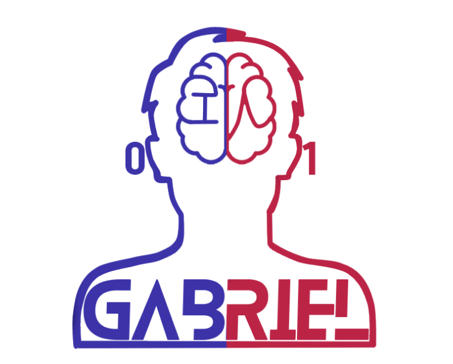

<app-topbar></app-topbar>

<!-- Botón de eliminar -->
<div *ngIf="isFile == true" class="delete">
  <button type="button" data-bs-toggle="modal" data-bs-target="#staticBackdrop">
    <svg xmlns="http://www.w3.org/2000/svg" width="30" height="30" fill="white" class="bi bi-trash-fill"
      viewBox="0 0 16 16">
      <path
        d="M2.5 1a1 1 0 0 0-1 1v1a1 1 0 0 0 1 1H3v9a2 2 0 0 0 2 2h6a2 2 0 0 0 2-2V4h.5a1 1 0 0 0 1-1V2a1 1 0 0 0-1-1H10a1 1 0 0 0-1-1H7a1 1 0 0 0-1 1H2.5zm3 4a.5.5 0 0 1 .5.5v7a.5.5 0 0 1-1 0v-7a.5.5 0 0 1 .5-.5zM8 5a.5.5 0 0 1 .5.5v7a.5.5 0 0 1-1 0v-7A.5.5 0 0 1 8 5zm3 .5v7a.5.5 0 0 1-1 0v-7a.5.5 0 0 1 1 0z" />
    </svg>
  </button>
</div>
<section class="content">
  <!-- Contenedor general -->
  <div class="parent">
    <!-- Contenedor del envio y previsualizacion del PDF -->
    <div class="child-1">
      <div *ngIf="isFile==false" align="center">
        
        <!-- Uso de la funcion que se encarga de recibir el documento -->
        <input (change)="onFileSelected()" type="file" id="file" class="input">
      </div>
      <ng-container *ngIf="isFile == true">
        <!-- Previsualizacion del documento PDF  -->
        <pdf-viewer [src]="pdfSrc" [render-text]="true" [original-size]="false" style="width: 100%; height: 100%">
        </pdf-viewer>

      </ng-container>

    </div>
    <!-- Contenedor para el chat -->
    <div class="child-2">
      <ng-container *ngIf="isFile==true">
      <section class="chatbox">
        <nav class="top-chat"></nav>
        <section class="chat-window chatContainer" id="chatContainer" #messageContainer>
          <!-- *ngFor: se encarga de recorrer la lista de los mensajes
              [ngClas]: se encarga de asignar una clase de estilos css dependiendo el filtro que se le indique, 
                        se filtro por el tipo de emisor del ms (user: Usuarios, ia: IA)  -->
          
          <article  *ngFor="let msj of mensajes" class="msg-container" id="msg-0"
            [ngClass]="{'msg-remote': msj.emisor === 'ia', 'msg-self' : msj.emisor === 'user' }" >
            <div  class="msg-box" >
              <div  class="flr">
                <div  class="messages">
                  <!-- Imprime el msj en el contenedor -->
                  <p class="msg" id="msg-0">
                    
                    {{msj.texto}}
                </p>
                </div>
              </div>
            </div>
          </article>
       
        </section>
        <!-- Formulario para el mensaje del usuario -->
        <div *ngIf="isFile == true">
        <form class="chat-input">
          <input type="text" placeholder="Type a message" good="true" [(ngModel)]="nuevoMensaje"
            [ngModelOptions]="{standalone: true}" (input)="checkInput()">
          <button (click)="envioMensaje()" type="submit" [disabled]="isInputEmpty">
            <svg style="width:24px; height:24px" viewBox="0 0 24 24">
              <path fill="rgba(0,0,0,.38)"
                d="M17,12L12,17V14H8V10H12V7L17,12M21,16.5C21,16.88 20.79,17.21 20.47,17.38L12.57,21.82C12.41,21.94 12.21,22 12,22C11.79,22 11.59,21.94 11.43,21.82L3.53,17.38C3.21,17.21 3,16.88 3,16.5V7.5C3,7.12 3.21,6.79 3.53,6.62L11.43,2.18C11.59,2.06 11.79,2 12,2C12.21,2 12.41,2.06 12.57,2.18L20.47,6.62C20.79,6.79 21,7.12 21,7.5V16.5M12,4.15L5,8.09V15.91L12,19.85L19,15.91V8.09L12,4.15Z" />
            </svg>
          </button>
        </form>
      </div>
        <!-- Formulario para simular la respuesta de la IA -->

        <!-- <form class="chat-input">
          <input type="text"  placeholder="Type a message IA" [(ngModel)]="nuevoMensajeIA" 
          [ngModelOptions]="{standalone: true}">
          <button (click)="envioMensajeIA()" type="submit">
            <svg style="width:24px; height:24px" viewBox="0 0 24 24">
                <path fill="rgba(0,0,0,.38)" d="M17,12L12,17V14H8V10H12V7L17,12M21,16.5C21,16.88 20.79,17.21 20.47,17.38L12.57,21.82C12.41,21.94 12.21,22 12,22C11.79,22 11.59,21.94 11.43,21.82L3.53,17.38C3.21,17.21 3,16.88 3,16.5V7.5C3,7.12 3.21,6.79 3.53,6.62L11.43,2.18C11.59,2.06 11.79,2 12,2C12.21,2 12.41,2.06 12.57,2.18L20.47,6.62C20.79,6.79 21,7.12 21,7.5V16.5M12,4.15L5,8.09V15.91L12,19.85L19,15.91V8.09L12,4.15Z" />
            </svg>
            </button>
        </form> -->
      </section>
    </ng-container>
    <ng-container *ngIf="isFile==false">
      <section class="chatbox-2">
      <div class="container-modal-ar">
        <div class="modal-ar">
          <svg xmlns="http://www.w3.org/2000/svg" width="100" height="100" fill="currentColor" class="bi bi-chat-dots" viewBox="0 0 16 16">
            <path d="M5 8a1 1 0 1 1-2 0 1 1 0 0 1 2 0zm4 0a1 1 0 1 1-2 0 1 1 0 0 1 2 0zm3 1a1 1 0 1 0 0-2 1 1 0 0 0 0 2z"/>
            <path d="m2.165 15.803.02-.004c1.83-.363 2.948-.842 3.468-1.105A9.06 9.06 0 0 0 8 15c4.418 0 8-3.134 8-7s-3.582-7-8-7-8 3.134-8 7c0 1.76.743 3.37 1.97 4.6a10.437 10.437 0 0 1-.524 2.318l-.003.011a10.722 10.722 0 0 1-.244.637c-.079.186.074.394.273.362a21.673 21.673 0 0 0 .693-.125zm.8-3.108a1 1 0 0 0-.287-.801C1.618 10.83 1 9.468 1 8c0-3.192 3.004-6 7-6s7 2.808 7 6c0 3.193-3.004 6-7 6a8.06 8.06 0 0 1-2.088-.272 1 1 0 0 0-.711.074c-.387.196-1.24.57-2.634.893a10.97 10.97 0 0 0 .398-2z"/>
          </svg>
          <br>
          El chat se habilitará hasta que seleccione un archivo
        </div>
      </div>
    </section>
    </ng-container>
      <!-- <input class="textarea" type="text" placeholder="Type here!"/> -->
    </div>
  </div>
</section>

<div class="modal fade" id="staticBackdrop" data-bs-backdrop="static" data-bs-keyboard="false" tabindex="-1"
  aria-labelledby="staticBackdropLabel" aria-hidden="true">
  <div class="modal-dialog modal-dialog-centered">
    <div class="modal-content">
      <div class="modal-header"
        style="background-color: #FB1C3C; display: flex; align-items:flex-end; justify-content: flex-end;">
        <!-- <h5 class="modal-title" id="staticBackdropLabel">Modal title</h5> -->
        <button type="button" data-bs-dismiss="modal" aria-label="Close">
          <svg xmlns="http://www.w3.org/2000/svg" width="30" height="30" fill="#ffff" class="bi bi-x-circle-fill"
            viewBox="0 0 16 16">
            <path
              d="M16 8A8 8 0 1 1 0 8a8 8 0 0 1 16 0zM5.354 4.646a.5.5 0 1 0-.708.708L7.293 8l-2.647 2.646a.5.5 0 0 0 .708.708L8 8.707l2.646 2.647a.5.5 0 0 0 .708-.708L8.707 8l2.647-2.646a.5.5 0 0 0-.708-.708L8 7.293 5.354 4.646z" />
          </svg>
        </button>
      </div>
      <div class="modal-body" align="center">
        <svg xmlns="http://www.w3.org/2000/svg" width="70" height="70" fill="#FB1C3C" class="bi bi-trash-fill"
          viewBox="0 0 16 16">
          <path
            d="M2.5 1a1 1 0 0 0-1 1v1a1 1 0 0 0 1 1H3v9a2 2 0 0 0 2 2h6a2 2 0 0 0 2-2V4h.5a1 1 0 0 0 1-1V2a1 1 0 0 0-1-1H10a1 1 0 0 0-1-1H7a1 1 0 0 0-1 1H2.5zm3 4a.5.5 0 0 1 .5.5v7a.5.5 0 0 1-1 0v-7a.5.5 0 0 1 .5-.5zM8 5a.5.5 0 0 1 .5.5v7a.5.5 0 0 1-1 0v-7A.5.5 0 0 1 8 5zm3 .5v7a.5.5 0 0 1-1 0v-7a.5.5 0 0 1 1 0z" />
        </svg>
        <span style="font-weight: 700;">¿Desea eliminar este archivo?</span>
        <div class="btn-modal">
          <button type="button" class="btn button-cancelar" data-bs-dismiss="modal">Cancelar</button>
          <button type="button" class="btn button-eliminar" data-bs-dismiss="modal"
            (click)="deleteFile()">Eliminar</button>
        </div>
      </div>

    </div>
  </div>
</div>